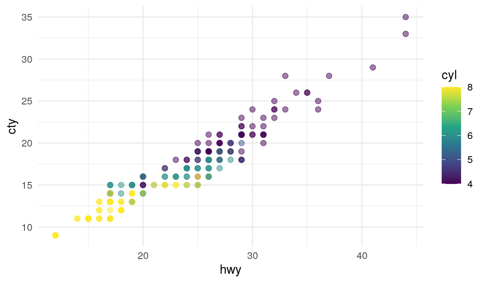
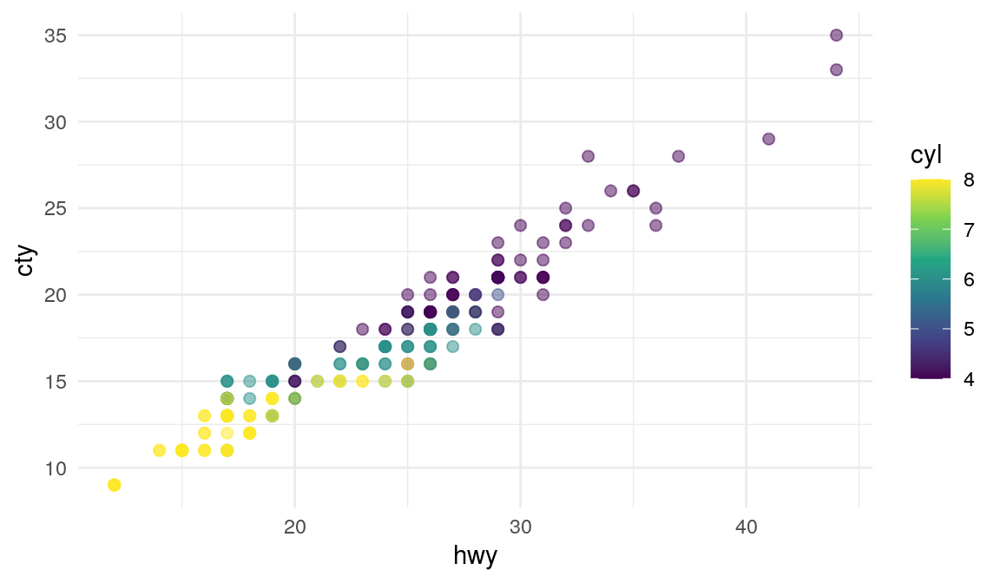

Code
ggplot(mpg, aes(x = hwy, y = cty, color = cyl)) +
geom_point(alpha = 0.5, size = 2) +
scale_color_viridis_c() +
theme_minimal()
This dataset contains a subset of the fuel economy data from the EPA. Specifically, we use the mpg dataset from the ggplot2 package.
The visualization below shows a positive, strong, and linear relationship between the city and highway mileage of these cars. Additionally, mileage is higher for cars with fewer cylinders.
Figure 1 shows a positive, strong, and linear relationship between the city and highway mileage of these cars.
ggplot(mpg, aes(x = hwy, y = cty, color = cyl)) +
geom_point(alpha = 0.5, size = 2) +
scale_color_viridis_c() +
theme_minimal()
The plots in Figure 2 show the relationship between city and highway mileage for 38 popular models of cars. In Figure 2 (a) the points are colored by the number of cylinders while in Figure 2 (b) the points are colored by engine displacement.
ggplot(mpg, aes(x = hwy, y = cty, color = cyl)) +
geom_point(alpha = 0.5, size = 2) +
scale_color_viridis_c() +
theme_minimal()
ggplot(mpg, aes(x = hwy, y = cty, color = displ)) +
geom_point(alpha = 0.5, size = 2) +
scale_color_viridis_c(option = "E") +
theme_minimal()There are 234 observations in our data.
mpgSession info.
sessionInfo()R version 4.3.1 (2023-06-16)
Platform: x86_64-pc-linux-gnu (64-bit)
Running under: Ubuntu 22.04.3 LTS
Matrix products: default
BLAS: /usr/lib/x86_64-linux-gnu/openblas-pthread/libblas.so.3
LAPACK: /usr/lib/x86_64-linux-gnu/openblas-pthread/libopenblasp-r0.3.20.so; LAPACK version 3.10.0
locale:
[1] LC_CTYPE=en_US.UTF-8 LC_NUMERIC=C
[3] LC_TIME=en_US.UTF-8 LC_COLLATE=en_US.UTF-8
[5] LC_MONETARY=en_US.UTF-8 LC_MESSAGES=en_US.UTF-8
[7] LC_PAPER=en_US.UTF-8 LC_NAME=C
[9] LC_ADDRESS=C LC_TELEPHONE=C
[11] LC_MEASUREMENT=en_US.UTF-8 LC_IDENTIFICATION=C
time zone: Etc/UTC
tzcode source: system (glibc)
attached base packages:
[1] stats graphics grDevices utils datasets methods base
other attached packages:
[1] downlit_0.4.3 xml2_1.3.5 ggplot2_3.4.2
loaded via a namespace (and not attached):
[1] vctrs_0.6.3 cli_3.6.1 knitr_1.43 rlang_1.1.1
[5] xfun_0.40 generics_0.1.3 jsonlite_1.8.7 labeling_0.4.2
[9] glue_1.6.2 colorspace_2.1-0 htmltools_0.5.6 scales_1.2.1
[13] fansi_1.0.4 rmarkdown_2.23 grid_4.3.1 evaluate_0.21
[17] munsell_0.5.0 tibble_3.2.1 fastmap_1.1.1 yaml_2.3.7
[21] lifecycle_1.0.3 memoise_2.0.1 compiler_4.3.1 dplyr_1.1.2
[25] pkgconfig_2.0.3 rstudioapi_0.15.0 farver_2.1.1 digest_0.6.33
[29] viridisLite_0.4.2 R6_2.5.1 tidyselect_1.2.0 utf8_1.2.3
[33] pillar_1.9.0 magrittr_2.0.3 withr_2.5.0 tools_4.3.1
[37] gtable_0.3.3 cachem_1.0.8